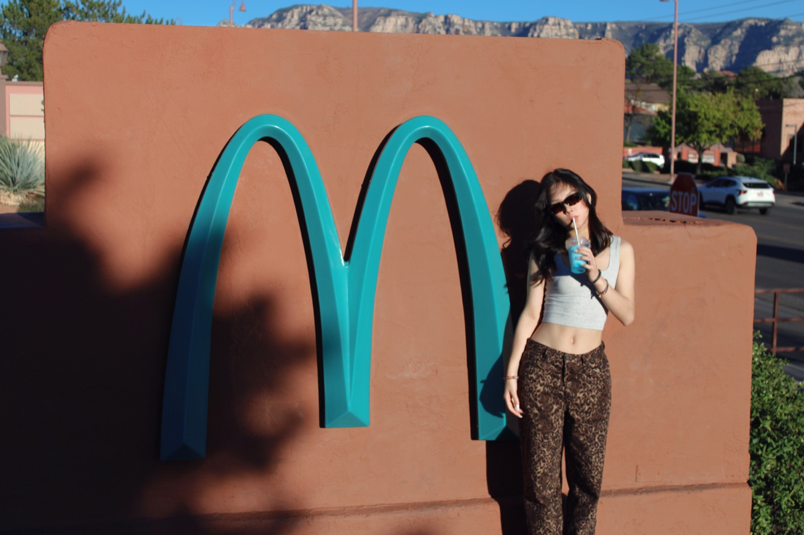
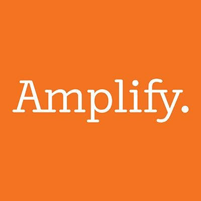

About
Hi, I’m Connie.
I study how people discover, use, and return to products, then use that evidence to guide growth and product decisions.

Studying media taught me to pay attention to how people interpret information and make choices. Studying data science and statistics gave me another way to investigate those choices. At UCLA Anderson, I’m building on both perspectives through business analytics. I’m drawn to questions where understanding the numbers and understanding the people behind them lead to a better decision.
I started by studying how people discover brands and engage with content. That led me to questions about who becomes a qualified lead, where users get stuck, and what makes them return. Today I bring those findings into conversations about what teams should build and measure next.
Education
UCLA Anderson School of Management
MS in Business Analytics · Expected graduation Dec 2027
University of Virginia
BA in Media Studies, Minor in Data Science and Statistics
Experience
Jun 2026 - Aug 2026

AmplifyProduct Strategy InternProduct Analytics · Market Entry · Competitive Analysis
I combined teacher behavior analysis, competitive research, and adoption planning to guide product priorities and market-entry recommendations.
Jul 2025 - Sep 2025 StoryblocksProduct Marketing InternProduct Analytics · Lifecycle Marketing · Enterprise Research
I analyzed user behavior and customer needs to inform lifecycle strategy, AI use cases, competitive research, and enterprise customer stories.
Jan 2025 - Jun 2025 APSolwayData Analyst InternGrowth Analytics · Paid Media Measurement · Lead Quality
I compared acquisition cost, conversion, and lead quality across audiences and creatives to identify higher-value B2B segments and guide budget decisions.
Jul 2024 - Dec 2024 CollegeBot, now VideoTutorProduct ManagerProduct Management · Product Analytics · A/B Testing
I shaped onboarding and search priorities through student research, behavioral data, and experimentation, working with Engineering and Design.
May 2024 - Jul 2024 DentsuMarketing Analytics InternCampaign Measurement · Paid Search Analytics · Digital Media Strategy
I developed a campaign measurement framework for Qeelin and analyzed competitive media and creator trends for Balenciaga.